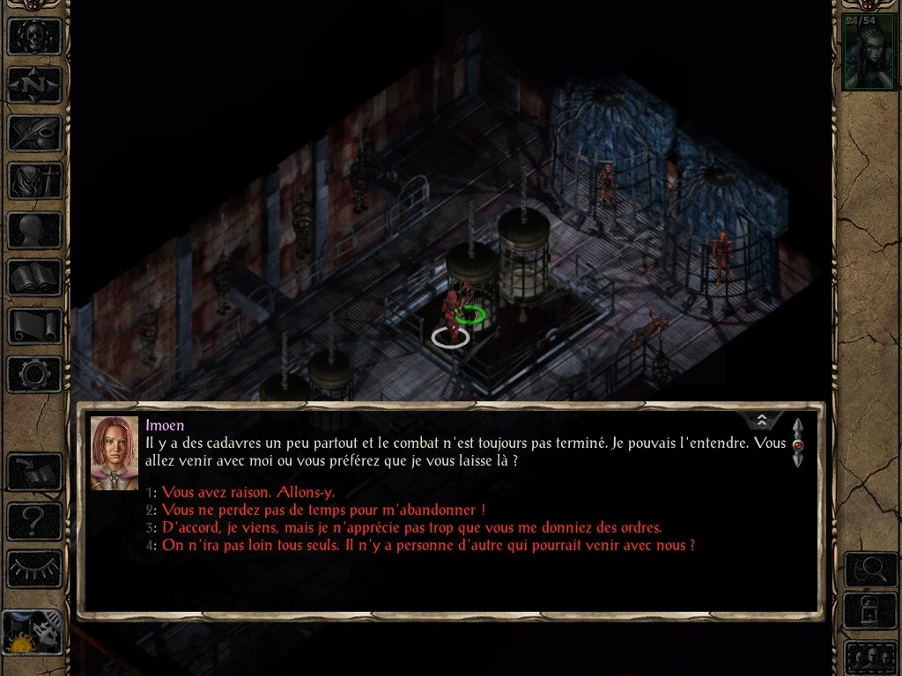
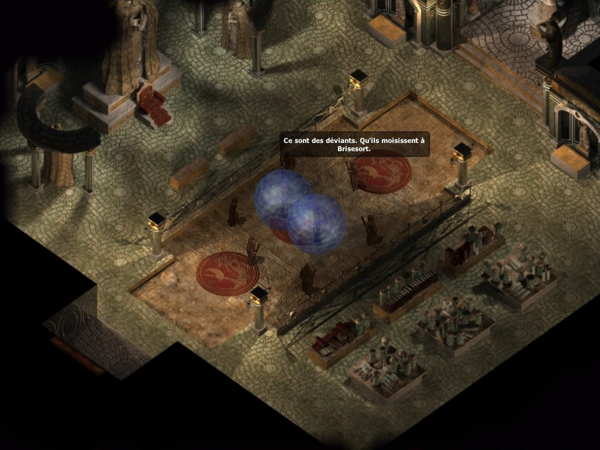
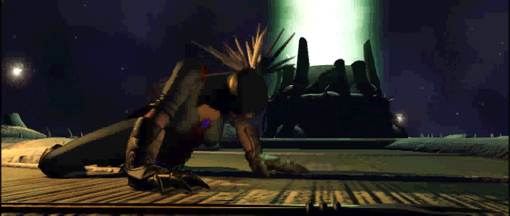
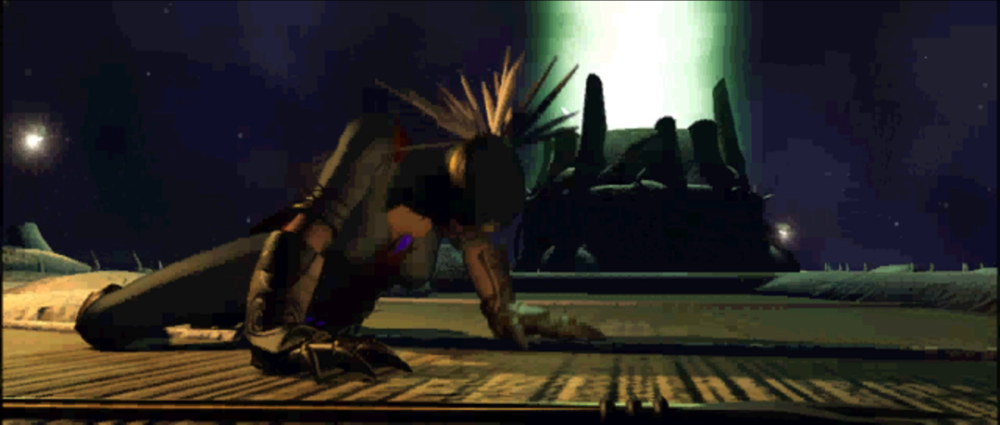

Ce mod a pour objectif de corriger la traduction française de Baldur's Gate II : Enhanced Edition, ainsi que de proposer une version française complète digne de ce nom, aussi bien au niveau des textes que du doublage audio.
En effet, le patch 2.6 de BG2:EE sorti en avril 2021, propose une nouvelle traduction française officielle réalisée par le prestataire de Beamdog : Mogi Group. Désespérément attendu depuis novembre 2013 par la communauté française, ce nouveau patch traduit notamment le contenu Enhanced Edition.
Bien que cette nouvelle traduction officielle ouvre de nouvelles perspectives, elle comporte également certaines régressions majeures. Comme par exemple : l'absence totale de doublage audio en français (par exemple la comparaison du doublage BG2:EE/BG2/CorrectfrBG2EE) ou encore de dialogue accordé au féminin pour le personnage joueur (par exemple la réponse 4), qui étaient pourtant bien présents dans le jeu original.
Nous constatons donc que la fidélité et la qualité de cette nouvelle traduction officielle ne correspondent pas aux attentes de la communauté.
Notre objectif est d'être aussi fidèle que possible aux textes originaux, sans pour autant être obstinément fermé à certaines corrections et améliorations de cette nouvelle traduction officielle, afin d'en tirer le meilleur parti de chacune. De plus, de nombreuses corrections et améliorations supplémentaires ont été intégrées aux textes et aux doublages originaux de BG2, voir la section Composants pour plus de détails.
Toute suggestion pour améliorer ce mod, ainsi que tout bénévole souhaitant apporter sa pierre à l'édifice, sont plus que bienvenus. Ce mod se veut être communautaire, n'hésitez pas à vous impliquer !
Merci de nous signaler toute éventuelle faute à corriger sur le Forum du mod.
Correction de la traduction de Baldur's Gate II : Enhanced Edition > Présentation • Haut de page
Compatibilité
Jeux concernés
Le mod « Correction de la traduction de Baldur's Gate II : Enhanced Edition » est conçu pour fonctionner sur BG2:EE (v2.6+) et EET (v13+).
Compatibilité avec les autres mods
« Correction de la traduction de Baldur's Gate II : Enhanced Edition » est un mod WeiDU et devrait par conséquent être compatible avec n'importe quel mod WeiDU. Si vous rencontrez des bugs, veuillez contacter Lefreut, Jazira, Mera ou Rivvers, ou encore poster dans le Forum du mod.
Ordre d'installation
Veuillez installer « Correction de la traduction de Baldur's Gate II : Enhanced Edition » avant tout autre mod, notamment Enhanced Edition Trilogy (EET).
Language du doublage vidéo et audio
« Correction de la traduction de Baldur's Gate II : Enhanced Edition » vous offre 3 options au sujet du doublage vidéo et audio :
VF+VO ; Doublage français corrigé, doublage anglais par défaut du contenu Enhanced Edition conservé :
Nécessite le composant [20] Patch audio et vidéo français.
VF ; Doublage français corrigé uniquement, bruitage du contenu Enhanced Edition conservé :
Nécessite les composants [20] Patch audio et vidéo français + [30] Suppression des doublages en anglais.
VO ; Doublage en anglais uniquement :
N'installez pas les composants [20] Patch audio et vidéo français et [30] Suppression des doublages en anglais.
Correction de la traduction de Baldur's Gate II : Enhanced Edition > Compatibilité • Haut de page
Installation
Mise en garde
Si une ancienne version de ce mod est déjà installée, il est nécessaire de la désinstaller d'abord. Pour cela, lancez setup-correctfrbg2ee.exe (ou .command si vous êtes sous OS X) et désinstallez tous les composants précédemment installés. Une fois la désinstallation achevée, supprimez le répertoire 📁 correctfrbg2ee et le fichier setup-correctfrbg2ee.exe (version Windows) avant d'extraire la nouvelle version du mod.
Lorsque vous installez ou désinstallez, ne fermez pas la fenêtre DOS en cliquant sur le bouton X ! Au lieu de cela, appuyez sur la touche Entrée lorsque l'invite de commandes vous le demande.
Par précaution, désactivez les antivirus ou tout logiciel résidant en mémoire avant d'installer ce mod, ou tout autre mod. Certains (en particulier avast et Norton !) ont une fâcheuse tendance à déclarer les exécutables des mods comme des faux positifs, provoquant ainsi l'échec de la procédure d'installation.
Note pour les jeux Enhanced Editions (EE)
Les Enhanced Editions sont des jeux que le développeur fait encore évoluer, notamment par l'ajout de capacités supplémentaires destinées à la création de mods et par l'ajout de contenus. N'oubliez pas que chaque patch de mise à jour effacera les mods que vous avez installés ! Ce mod ne fera pas exception à la règle.
Si vous pouvez retarder la mise à jour du patch en plein milieu d'une partie moddée (si vous en avez la possibilité, notamment chez Beamdog et Good Old Games), n'oubliez pas que même après avoir réinstallé les mods sur un nouveau patch, vous ne pourrez peut-être pas continuer le jeu avec vos anciennes sauvegardes, en particulier à cause des noms de personnages, de lieux, etc., qui pourraient être incorrects. Pour y remédier, copiez tout le dossier du jeu dans un nouveau dossier dans lequel vous installerez vos mods, et qui ne sera pas modifié par les patchs de mise à jour. Il est important que vous installiez le mod dans la version linguistique dans laquelle vous jouez. Sinon, les dialogues du mod ne s'afficheront pas et provoqueront des messages d'erreur.
Windows
« Correction de la traduction de Baldur's Gate II : Enhanced Edition » pour Windows est livré et installé avec WeiDU, et est diffusé sous forme d'archive.
Vous devez extraire les fichiers de l'archive dans votre répertoire de jeu (le dossier qui contient le fichier CHITIN.KEY) à l'aide de 7zip ou de WinRAR. Une fois l'archive extraite correctement, vous devriez trouver le répertoire 📁 correctfrbg2ee et le fichier setup-correctfrbg2ee.exe dans votre répertoire de jeu. Pour installer le mod, il suffit de double-cliquer sur setup-correctfrbg2ee.exe et de suivre les instructions affichées à l'écran.
Vous pouvez lancer setup-correctfrbg2ee.exe dans votre répertoire de jeu pour réinstaller, désinstaller, ou encore changer des composants.
Mac OS X
« Correction de la traduction de Baldur's Gate II : Enhanced Edition » pour Mac OS X est livré et installé avec WeiDU, et est diffusé dans la même archive compressée.
Extrayez le contenu de l'archive dans votre répertoire de jeu. Après une extraction réussie, ce dernier contiendra les fichiers setup-correctfrbg2ee, setup-correctfrbg2ee.command, et le répertoire 📁 correctfrbg2ee. Pour installer, il suffit de double-cliquer sur setup-correctfrbg2ee.command et de suivre les instructions affichées à l'écran.
Vous pouvez lancer setup-correctfrbg2ee.command dans votre répertoire de jeu pour réinstaller, désinstaller ou changer des composants.
Linux
« Correction de la traduction de Baldur's Gate II : Enhanced Edition » pour Linux est diffusé dans la même archive compressée, mais sans l'installateur WeiDU.
Extrayez le contenu du mod dans le répertoire du jeu que vous voulez modder.
Téléchargez la version la plus récente de WeiDU pour Linux sur WeiDU.org et copiez weidu, weinstall et tolower dans /usr/local/bin (créez-le s'il n'existe pas). Ouvrez ensuite un terminal et allez ( cd ) dans le répertoire d'installation de votre jeu, lancez /usr/local/bin/tolower et répondez « Y » aux deux questions. Vous pouvez éviter d'exécuter la seconde option (Linux.ini) si vous l'avez déjà lancée une fois dans le même dossier. Pour gagner du temps, l'archive est déjà passée en minuscules, aussi il n'est pas non plus nécessaire d'exécuter la première option (passer les noms de fichiers en minuscules) si vous n'avez extrait que ce mod depuis la dernière fois que vous avez passé les noms de fichiers en minuscules. Si vous avez un doute, il vaut mieux exécuter tolower et accepter les deux options.
Tapez la commande export PATH=$PATH:/usr/local/bin , puis lancez weinstall setup-correctfrbg2ee depuis le dossier de votre jeu pour installer le mod. Puis, lancez wine baldur.exe et commencez à jouer.
Note pour effectuer une désinstallation complète
En plus des méthodes détaillées plus haut pour supprimer des composants, il est possible de désinstaller complètement le mod en tapant setup-correctfrbg2ee --uninstall dans une ligne de commandes, ce qui supprimera tous les composants sans devoir ingurgiter tous les messages.
En complément
Pour plus de détails sur les mods WeiDU et comment les installer, consulter cette FAQ.
Correction de la traduction de Baldur's Gate II : Enhanced Edition > Installation • Haut de page
Composants
Le programme d'installation comprend les composants suivants. Chacun possède un numéro distinct et pré-défini qui lui attribue une position déterminée ; ce qui permet aux autres composants et aux autres mods de le détecter et aux utilitaires d'installation automatique de préciser quels composants installer.
[10] Correction de la traduction de Baldur's Gate II : Enhanced Edition
Ce composant apporte toutes les corrections nécessaires aux textes de BG2:EE.
Importation des correctifs des textes du EEfixpack.
Importation des corrections de la traduction française officielle du patch 2.6.
Ajout des versions féminines manquantes et suppression des versions féminines inadéquates.
Ajout des onomatopées, actions et interjections dans les « sous-titres » des répliques doublées pour les malentendants (Aïe !, Hmmmm..., *soupire*, etc.).
Ajout des détails omis de la version originale.
Correction des « sous-titres » pour les répliques doublées en français.
Correction des tutoiements/vouvoiements.
Correction et uniformisation des noms propres (personnages, lieux, organisations, lore, objets, sorts, etc.).
Correction et uniformisation des onomatopées, actions et interjections (*sanglote*, *rester silencieux*, *rote*, etc.).
Correction des non-sens et des erreurs de traduction.
Correction des caractères spéciaux (æ, ō, œ, Œ, Î, Ù, Ê, É, È, À, Ç, Ô, etc.).
Correction des fautes de frappe, d'orthographe, de conjugaison et de grammaire.
Uniformisation du cartouche des objets et des sorts.
Uniformisation de la casse et de la ponctuation (?, !, :, ;, «, », ', -, etc.).
Uniformisation des textes partagés entre BG:EE et BG2:EE (objets, sorts, interface utilisateur, etc.).
Suppression des whitespaces et des caractères spéciaux inadéquats.
Amélioration de la « qualité de vie » (espaces insécables, 10 000, 2 365, etc.).
Réduction du nombre de majuscules dans les noms communs (Tante, Elfe Noir, le Très Noble Ordre des Chevaliers du Cœur Radieux, etc.).
Réduction des anglicismes (ok, hello, ranger, yeah, etc.).
Réduction des mots-clés inutiles ou inadéquats (<GABBER>, <HESHE>, <GIRLBOY>, etc.).
Correction (et/ou ajout) de références de ligne des objets (noms, infobulles, descriptions, icônes, etc.) :
► Objets :
Armure d'écailles de dragon blanc (CHAN20.ITM).
Armure d'écailles de dragon bleu (PLAT20.ITM).
Armure d'écailles de dragon d'ombre (LEAT19.ITM).
Cotte de mailles elfe noir +3 (DWCHAN01.ITM).
Cotte de mailles elfe noir +5 (DWCHAN02.ITM).
Hallebarde elfe noir +3 (DWHALB01.ITM).
Armure de plates complète elfe noir +5 (DWPLAT01.ITM).
Cape de Montolio +1 (CLCK32.ITM).
Symbole sacré de Baervan Ermiterrant (beltbw.ITM).
Symbole sacré de Heaum (BELT13.ITM).
Symbole sacré de Lathandre (BELT12.ITM).
Symbole sacré de Shar (beltsh.ITM).
Symbole sacré de Talos (BELT14.ITM).
Symbole sacré de Tempus (OHTEMPUS.ITM).
Symbole sacré de Tyr (beltty.ITM).
Cotte de mailles elfe noir +1 (CLOLTH.ITM).
Protection contre le feu (SCRL6H.ITM).
Protection contre le froid (SCRL6I.ITM).
Protection contre l'acide (SCRL6Y.ITM).
Protection contre l'électricité (SCRL5T.ITM).
Fronde +3 (SLNG03.ITM).
Correction (et/ou ajout) de références de ligne des créatures (noms, infobulles, etc.) :
Les répliques non doublées en français sont conservées.
[30] Suppression des doublages en anglais (nécessite le composant "Patch audio et vidéo français")
Ce composant supprime les doublages anglais restants.
Suppression des répliques non doublées en français.
Les doublages de type « bruitages » du contenu Enhanced Edition sont conservés.
[40] Suppression des ensembles de voix en anglais
Ce composant supprime les ensembles de voix en anglais.
Suppression des ensembles de voix en anglais de Adventurers of Neverwinter pour le personnage principal ajoutées par le patch 2.6.
Correction de la traduction de Baldur's Gate II : Enhanced Edition > Composants • Haut de page
Captures d'écran et vidéos
Textes
Survolez l'image avec le curseur de la souris pour afficher la version corrigée (BG2:EE/CorrectfrBG2EE).

Survolez l'image avec le curseur de la souris pour afficher la version corrigée (BG2:EE/CorrectfrBG2EE).

Doublage
Lancez la vidéo pour comparer les différentes versions du doublage (BG2:EE/BG2/CorrectfrBG2EE).
Lancez la vidéo pour comparer les différentes versions du doublage (BG2:EE/BG2/CorrectfrBG2EE).
Cinématiques
Comparez les différentes versions des cinématiques (BG2).

Survolez l'image avec le curseur de la souris pour afficher la version corrigée (BG2:EE/CorrectfrBG2EE).

Correction de la traduction de Baldur's Gate II : Enhanced Edition > Captures d'écran et vidéos • Haut de page
Foire Aux Questions
Cette traduction est-elle complète ?
Oui, tous les textes sont traduits en français, tous les doublages en français de BG2 ainsi que les vidéos sont importés, et bien plus encore.
Cette traduction est-elle terminée ?
Non, mais elle est déjà bien plus aboutie que celle de BG2 classique et très probablement aussi BG2:EE selon vos critères. Elle sera par conséquent régulièrement mise à jour.
Prévoyez-vous d'importer ces corrections pour BG2 classique et Baldur's Gate Trilogy (BGT) ?
Malheureusement, non. Cela représente bien trop de travail pour notre petite équipe, nous utilisons tous les Enhanced Edition et nous n'avons aucun intérêt personnel à le faire. Cependant, si un volontaire motivé souhaite venir travailler en ce sens dans notre mod, il est plus que le bienvenu.
Avez-vous prévu d'autres corrections, d'autres composants ?
Oui, hormis bien sûr les correctifs supplémentaires des textes qui viendront corriger les retours des testeurs, nous avons d'autres travaux en cours. Nous ne voulons pas faire de promesses que nous ne pourrons peut-être pas tenir, mais voici un exemple de ce que vous réservent les prochaines releases : d'autres correctifs des textes et du doublage, une égalisation ainsi qu'une légère augmentation du volume sonore des répliques doublées, entre autres...
Je souhaite proposer une suggestion ou j'ai une question, où puis-je la soumettre ?
Je vous suggère d'ouvrir un nouveau thread dans cette section du forum du mod. N'hésitez pas.
J'ai repéré une erreur (de texte, doublage, bogue, etc.), où puis-je la soumettre ?
Sur ce thread : Erreurs à corriger dans BG2:EE/BG2, nous consultons régulièrement cette page et corrigeons les retours en conséquence. N'hésitez pas.
Je souhaite contribuer à ce mod, où puis-je soumettre ma "candidature" ?
Sur ce thread : Appel à volontaires, nous consultons régulièrement cette page. N'hésitez pas.
Correction de la traduction de Baldur's Gate II : Enhanced Edition > FAQ •Haut de page
Dépannage
Si vous rencontrez un bogue, veuillez en informer les auteurs dans le forum du mod. Incluez dans votre message le contenu du fichier WeiDU.log (mis entre les balises [spoiler][/spoiler] s'il vous plaît !), ou attachez-le en pièce jointe au message s'il est trop volumineux.
Par ailleurs, « Correction de la traduction de Baldur's Gate II : Enhanced Edition » est disponible sur GitHub, où la communauté peut soumettre des correctifs et des modifications. N'hésitez pas à vous impliquer, toute aide est la bienvenue !
Problèmes connus :
Différence de quelques vouvoiements/tutoiements dans les textes originaux des répliques doublées en français.
Différence entre le texte et l'audio de quelques répliques doublées en français (Heaum/Helm, Le Pouce/Thumb, etc.)
☛ Pour toute question ou demande d'assistance, veuillez consulter le forum du mod.
Correction de la traduction de Baldur's Gate II : Enhanced Edition > Dépannage • Haut de page
Les créateurs des Enhanced Editions et de Siege of Dragonspear : Overhaul Games, Beamdog, ainsi que Mogi Group pour la traduction française du contenu EE.
L'équipe des d'Oghmatiques pour leurs nombreuses traductions, ainsi qu'à tous les bénévoles moddeurs, traducteurs, relecteurs de la communauté française.
Le mod « Correction de la traduction de Baldur's Gate II : Enhanced Edition » n'est pas développé, supporté ni approuvé par BioWare™ ou Interplay/Black Isle, Overhaul Games, Beamdog ou Wizards of the Coast. Il a été développé par Lefreut, Jazira, Mera et Rivvers et est basé sur le jeu Baldur's Gate II : Enhanced Edition.
Ce mod a été créé pour être librement apprécié par tous les joueurs de Baldur's Gate II : Enhanced Edition. Cependant, il ne doit pas être vendu, publié, compilé ou redistribué sous une forme quelconque sans le consentement de ses auteurs.
Veuillez noter que tout partage ou hébergement de ce mod est interdit sans la permission des auteurs.
S'il existe des problèmes de droits d'auteur ou si cette déclaration nécessite une révision, veuillez nous contacter et nous conseiller sur la démarche à suivre. Plus particulièrement, si vous trouvez dans ce mod des illustrations susceptibles d'être en conflit avec les règles de droits d'auteur, merci de bien vouloir nous le faire savoir dès que possible et nous supprimerons immédiatement le contenu en question.
Tous les copyrights et marques commerciales appartiennent à leurs propriétaires respectifs.
La communauté de modding sur le moteur Infinity Engine a été très active depuis plus de vingt ans maintenant, et a produit des milliers d'heures de travail non rémunérées effectuées par des fans du jeu. Les moddeurs, traducteurs et relecteurs s'efforcent de publier le meilleur de leur travail, et les joueurs bénéficient des mods les plus performants et les mieux maintenus, à condition que nous travaillions tous vers un même but.
Mais cette harmonie peut malheureusement être perturbée, principalement par deux comportements. Le premier, c'est de revendiquer le travail de quelqu'un d'autre. Le second consiste à héberger et à redistribuer un mod sans la permission de son(es) auteur(s).
Soyez assez sympas avec vos collègues joueurs, moddeurs, traducteurs et relecteurs. Ne le faites pas.
Correction de la traduction de Baldur's Gate II : Enhanced Edition > Crédits et remerciements • Haut de page
Historique des versions
Version 0.23 (21 août 2024)
Relecture et uniformisation de tous les sorts.
Ajout de cartouches manquants.
Uniformisation BGEE et BG2EE.
Amélioration des descriptions des classes.
Modification des lignes de narration.
Relecture et dévouvoiment de Neera.
Corrections diverses.
Version 0.22 (21 janvier 2024)
Mise à jour des vidéos doublées.
Relecture et dévouvoiment de Neera.
Uniformisation BGEE et BG2EE.
Corrections diverses.
Version 0.21 (4 octobre 2023)
Corrections pour les sons utilisés dans des cutscene du composant Suppression des doublages en anglais.
Début de la relecture et du dévouvoiment de Neera.
Uniformisation BGEE et BG2EE.
Corrections diverses.
Version 0.20 (8 juillet 2023)
Relecture et corrections des sorts.
Uniformisation BGEE et BG2EE.
Relecture des biographies.
Corrections diverses.
Version 0.19 (2 avril 2023)
Relecture et corrections des sorts.
Uniformisation BGEE et BG2EE.
Mise à jour des vidéos doublées et ajout des vidéos manquantes en meilleur qualité.
Uniformisation des espaces insécables.
Version 0.18 (19 février 2023)
Uniformisation BGEE et BG2EE.
Bastion de Rocheprofonde au lieu de Clan de Rocheprofonde.